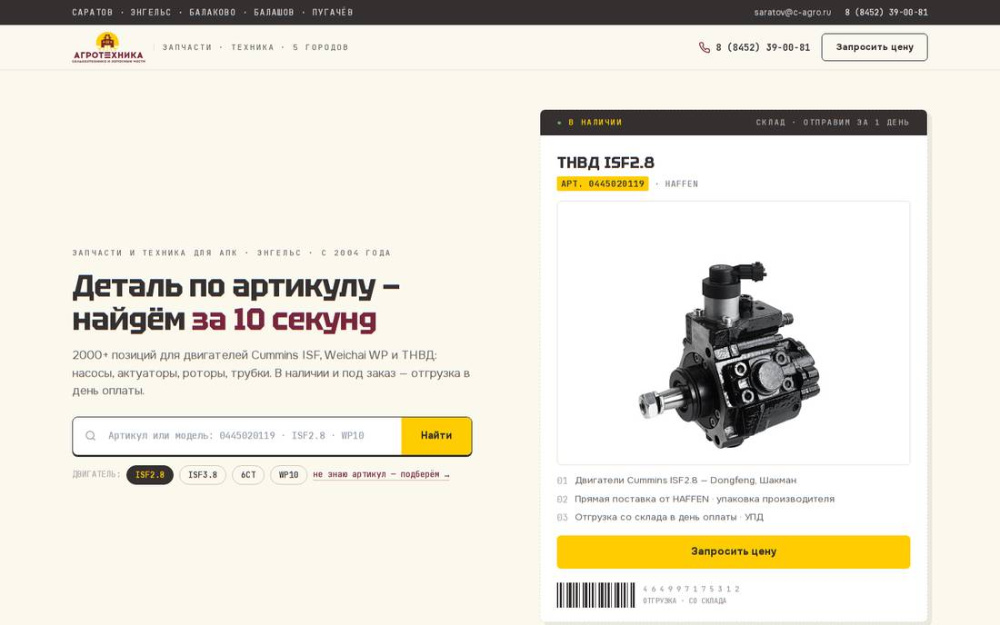
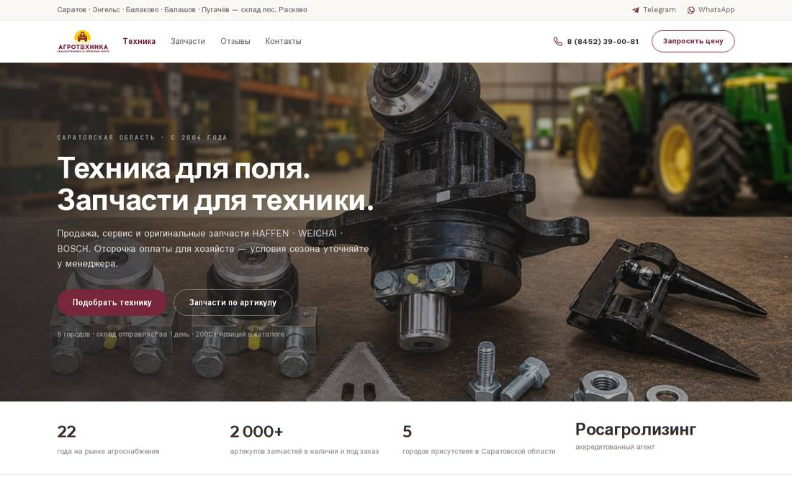

ДЕМО-МАКЕТЫ · НЕ ПУБЛИКАЦИЯ
Варианты нового сайта С-Агротехника
Каждый вариант — рабочие страницы с переходами: главная и каталог запчастей. Откройте, полистайте, вернитесь сюда и сравните.
ВАРИАНТ 1
Поиск по артикулу — главный герой

2 страницы
Главная + каталог запчастей (входы: поиск, чипы двигателей, меню)
Фирменный стиль
Ваш логотип, бордовый + жёлтый, артикулы на жёлтых маркерах
Сценарий
«Деталь по артикулу — найдём за 10 секунд»: поиск → карточка → запрос цены
ВАРИАНТ 2
Витрина техники + спокойный минимализм

2 страницы
Главная + каталог запчастей (входы: меню, поиск, hero-кнопка)
Минимализм
Техника — главный герой; бордовый — единственный акцент, белый фон, воздух
Сценарий
«Техника для поля, запчасти для техники»: витрина → каталог → WhatsApp-запрос